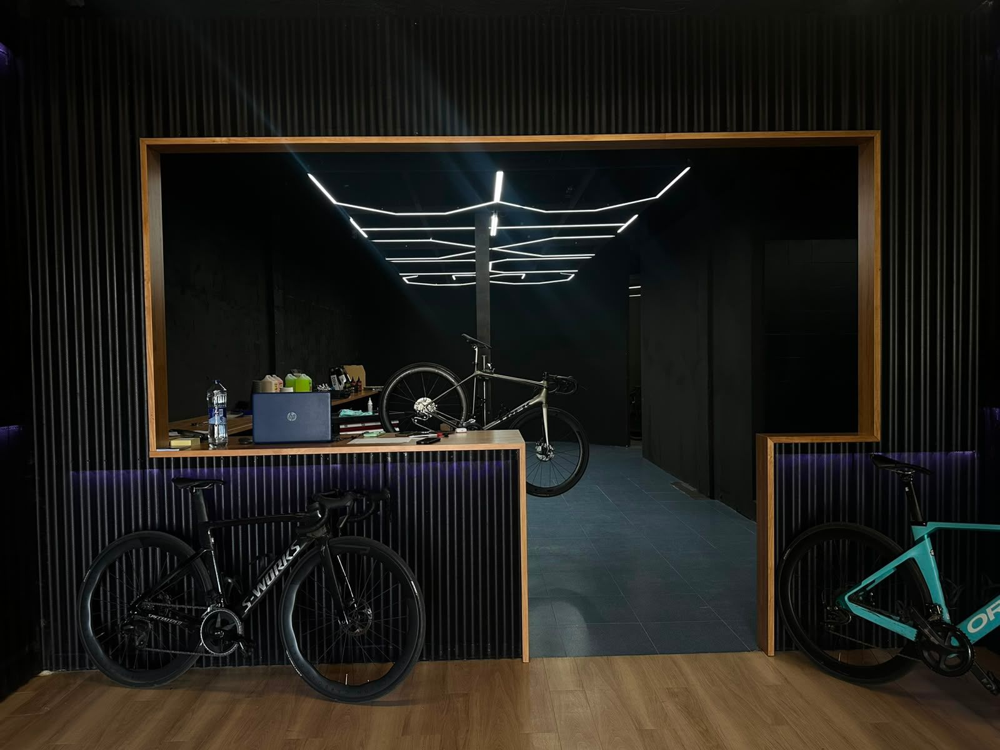
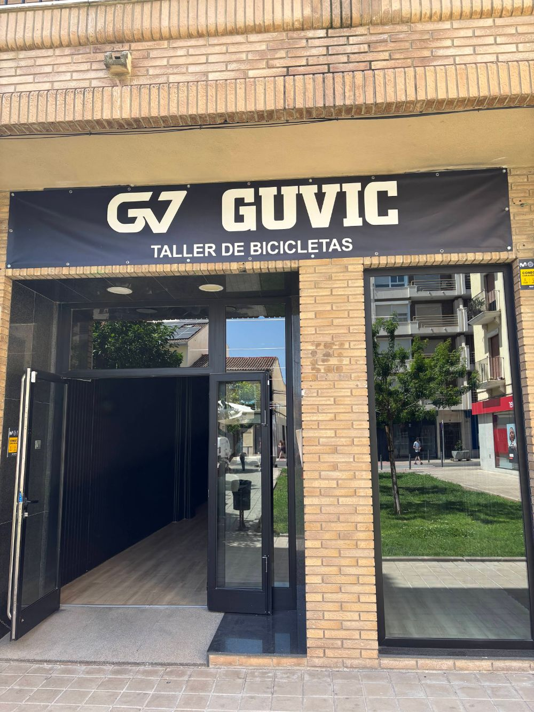

Tu bici, a punto y sin esperas
Cuéntanos qué le pasa (o mándanos una foto) y te decimos al momento qué necesita y cuánto cuesta. La traes al taller o pasamos a recogerla.
Cuéntanos qué le pasa a tu bici
Como hablar con el mecánico por WhatsApp, pero a cualquier hora. Te orienta con nuestros precios reales y prepara el parte para que el taller solo tenga que confirmarte.
- 1Explícalo como quieras«Me chirría el freno», «el cambio salta», o mándale una foto de la pieza.
- 2Te dice qué es y cuánto cuestaCon la tarifa del taller: mano de obra, tiempo aproximado y si hacen falta piezas.
- 3La traes o la recogemosDeja tus datos y el parte llega al equipo de GUVIC por WhatsApp para confirmarte.
El precio es orientativo: el mecánico lo confirma al ver la bici. El diagnóstico en el taller es gratis.
Precios claros, sin sorpresas
Toda nuestra tarifa de mano de obra. Ve añadiendo lo que necesitas y te calculamos el presupuesto al momento, sin registrarte.
No tienes ni que moverte
Pasamos a por tu bici, la reparamos en el taller y te la devolvemos lista para rodar.
Pide la recogida
Desde el asistente o desde tu presupuesto. Dinos dirección y cuándo te viene bien.
Diagnóstico y precio
La revisamos gratis y te confirmamos por WhatsApp el precio final antes de tocar nada.
Te la devolvemos
Lista, ajustada y con garantía en el trabajo. Pagas con tarjeta o en efectivo.
Zona y horarios de recogida: te los confirma el taller.
Componentes que montamos cada día
Shimano, SRAM, Galfer, Maxxis, CeramicSpeed… Recógelos gratis en el taller o te los enviamos a casa.
Lo último que ha entrado

En el centro de Puçol
Plaza 25 de Abril, 2, bajo izquierda · 46530 Puçol (Valencia). Fácil de aparcar en la zona. Pasión por el ciclismo desde 2004.